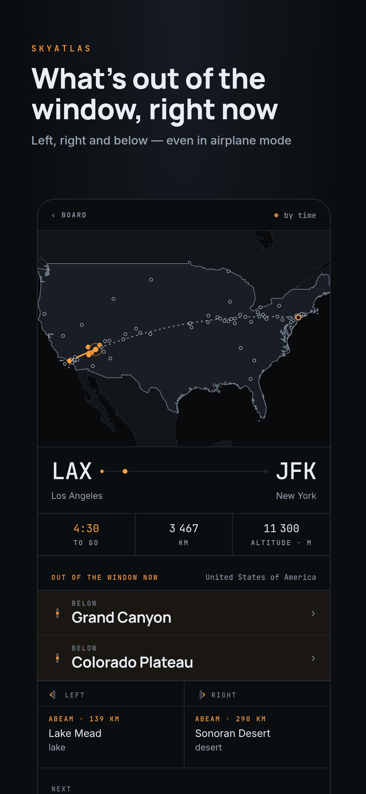
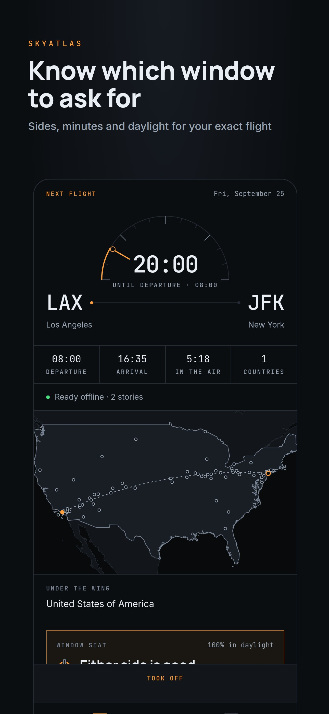
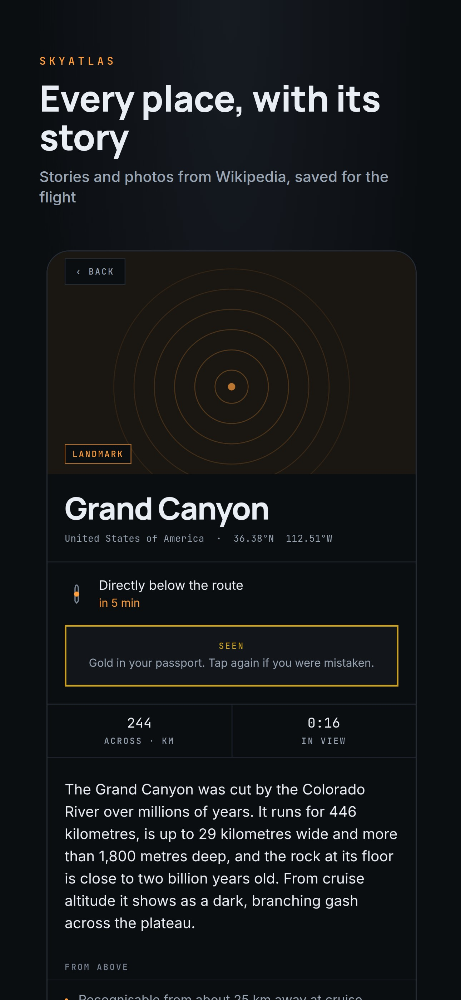
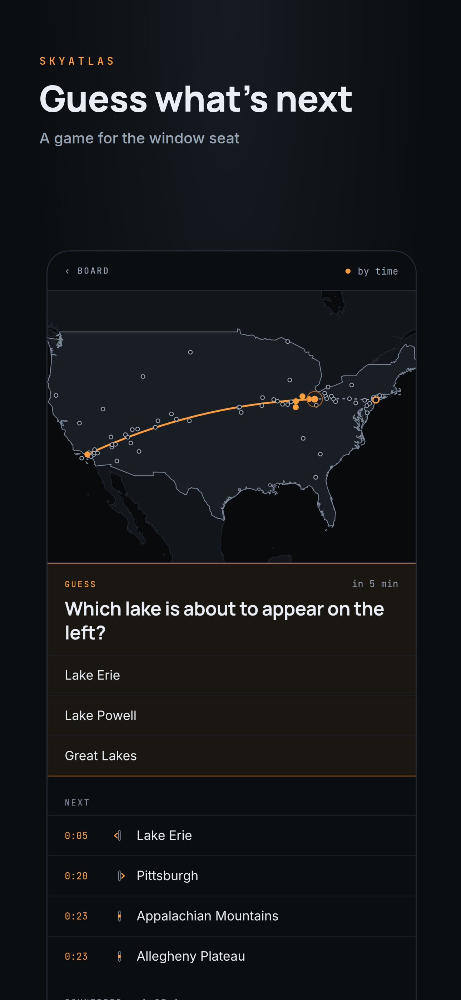
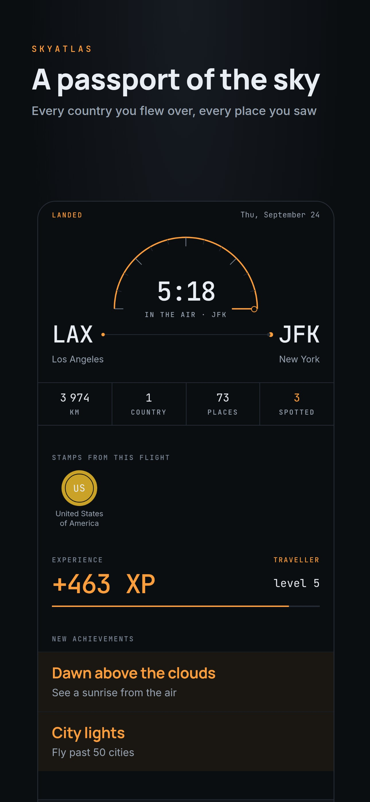

SkyAtlas · a guide for the window seat
What you fly over, offline.
SkyAtlas tells you which side to sit on, what will pass beneath the wing and at what minute, and the story behind each place. You prepare the flight on the ground. In the air, everything works in airplane mode, with no account.
Free at launch. No ads. English, Russian, German, French, Spanish and Japanese.
Out of the window now
1 h 42 min in the air
Left
Elbrus
Right
Black Sea
Next
Sunset on board
An illustration of the in-flight screen, with the kind of detail it shows.
9,300places built in
30achievements
6languages
4 mindemo flight, 20×
How it works
Prepared on the ground. Read in the air.
Your phone does all the work. There is no SkyAtlas server; the route, the places and the timeline are calculated on the device from data built into the app.
01 · Before you fly
Add the flight while you have Wi-Fi
- Airports, date and local departure time. Or scan the barcode on your boarding pass, or import its Apple Wallet file. Flight number, arrival time and seat are optional.
- The route follows the great circle through climb, cruise and descent, and goes around airspace closed to your carrier.
- Window advice: which side to ask for, and how much of the flight is in daylight.
- Stories from Wikipedia and photos from Wikimedia Commons are saved to the phone, in your language where an article exists, with an offline map of the route.
- A day before departure, at check-in time, a reminder names the side to ask for and what it will show. It stays quiet if your seat is already known or neither side is worth it.
02 · In the air
Everything in airplane mode
- About 15 minutes after the scheduled departure, “Airborne?” appears on your lock screen. Tap Took off and the flight starts.
- Out of the window now: what is on the left, on the right and below, and what comes next, with a countdown.
- Alerts for the three best moments on your side, or up to six. Tap one and that place’s card opens. When there is nothing to see, it stays quiet.
- The phone’s GPS refines the position when it has a fix near the window.
- Borders, the Equator, the tropics, the polar circles and the Date Line, sunrise and sunset on board, the start of the descent.
03 · After landing
The flight goes into your passport
- A stamp for every country you flew over.
- Gold for every place you saw with your own eyes.
- Experience, levels and ranks, and new achievements.
- A short quiz about the flight you have just taken.
- A postcard to send with “we landed”.
- peaks
- volcanoes
- mountain ranges
- deserts
- seas
- lakes
- islands
- rivers
- glaciers
- cities
About 9,300 notable places. For each one on your route: which side, at what minute, how far away, and how long it stays in view.
At the window
Look up from the phone.
SkyAtlas is meant to be glanced at, then put down. Three things keep your eyes on the window.
Guess what’s below
A question before the view
Which mountain is about to appear on the left?
A few minutes before a notable place, pick the answer from a short list. Then look out of the window and check.
Audio guide
Stories read aloud
As a place comes abeam, the audio guide reads its story using your phone’s built-in voice. Headphones in, eyes on the window.
I see it
Gold for what you saw
Spotted it for real? Tap I see it, and the place turns gold in your passport. It is the one stamp that only your own eyes can earn.
The sky passport
Every flight leaves a mark.
Countries, lines crossed and places collect in one passport, flight after flight, beside your flight log.
Stamps
Countries and places
A country you fly over gets an outlined stamp; one you land in is filled. Places you saw yourself turn gold.
Levels and ranks
Experience from every flight
- Newcomer level 1
- Traveller level 4
- Explorer level 10
- Pathfinder level 20
- Legend of the Skies level 35
30 achievements
Earned by flying. None needs a streak.
- ShellbackCross the Equator
- Golden DragonCross the Date Line
- Blue NoseCross a polar circle
- Dawn above the cloudsA sunrise from the air
- Sharp-eyedSpot 25 places
- Know-it-allGuess 10 places
Quiz and postcard
A last look back
After landing: a short quiz about the flight you just took (which side was that peak on, which country you spent longest over) and a postcard with the countries, distance and time in the air, to send with “we landed”.
Screens
A quiet instrument for a dark cabin.





Privacy
Your flights stay on your phone.
There is no account and no sign-in. Your flights, passport and settings live only on your phone, and there is no SkyAtlas server to send them to. To prepare a flight, your phone downloads stories and photos directly from Wikipedia and Wikimedia Commons and map tiles from OpenFreeMap, and connects to nothing else. The GPS and the camera are used on the phone only. No ads, no tracking, no analytics, no crash reports.
- Accountnone
- Where your data liveson the phone
- Our serversnone
- Connects toWikimedia, OpenFreeMap
- Ads, tracking, analyticsnone
Honestly
The aircraft’s position is an estimate from the schedule and the take-off time, refined by GPS when it is available. What you actually see depends on the weather, the clouds, daylight and your seat. SkyAtlas is for information and enjoyment. It is not a flight tracker, and it is not for navigation.
Questions
Before you board
Does it really work in airplane mode?
Yes. Add the flight while you still have a connection. The route and the places are ready in seconds, and the stories, photos and offline map download while you wait at home or at the gate. In the air, nothing needs a connection: tap “Took off”, and the timeline runs from the phone’s clock.
How accurate is it?
The route is a model, not the real track: a great circle with a typical climb and descent, detoured around airspace known to be closed. The position is estimated from the take-off time you confirm, and the phone’s GPS refines it when it gets a fix near the window. If the timing feels early or late, you can shift the take-off time and everything moves with it. Read the times as “about now”, not to the second.
Which seat should I choose?
SkyAtlas tells you when you add the flight: sit on the left, sit on the right, either side is good, or the window will not show much on this route. It also shows how much of the flight is in daylight. A day before departure, at check-in time, it reminds you which window to ask for. If you enter your seat, alerts only mention what you can see from your side.
What if it is cloudy, or a night flight?
SkyAtlas cannot see the weather, so clouds may hide what it describes. Alerts for places are only sent in daylight. At night it tells you that only city lights will be visible, if the sky is clear. Your passport still fills up: every country and place you passed is recorded whatever the weather, and gold is kept for what you actually saw.
Which languages does it speak?
English, Russian, German, French, Spanish and Japanese. Stories come from Wikipedia in your language where an article exists. Otherwise the English article is used, and the card says so.
Does it cost anything?
SkyAtlas is free at launch, with every feature open. There are no ads.
What data does it collect?
Nothing is sent to us. Your flights, passport and settings are stored on your phone, and there is no account. To download content, the phone connects to Wikipedia, Wikimedia Commons and OpenFreeMap, which, like any website, see your IP address and what is requested. Location and camera are used on the phone only; the camera reads the boarding-pass barcode and keeps only the flight details. The details are in the Privacy Policy.
Can I try it without a ticket?
Yes. A four-minute demo flight runs twenty times faster than real time and shows everything the app does in the air. Demo flights do not go into your passport.